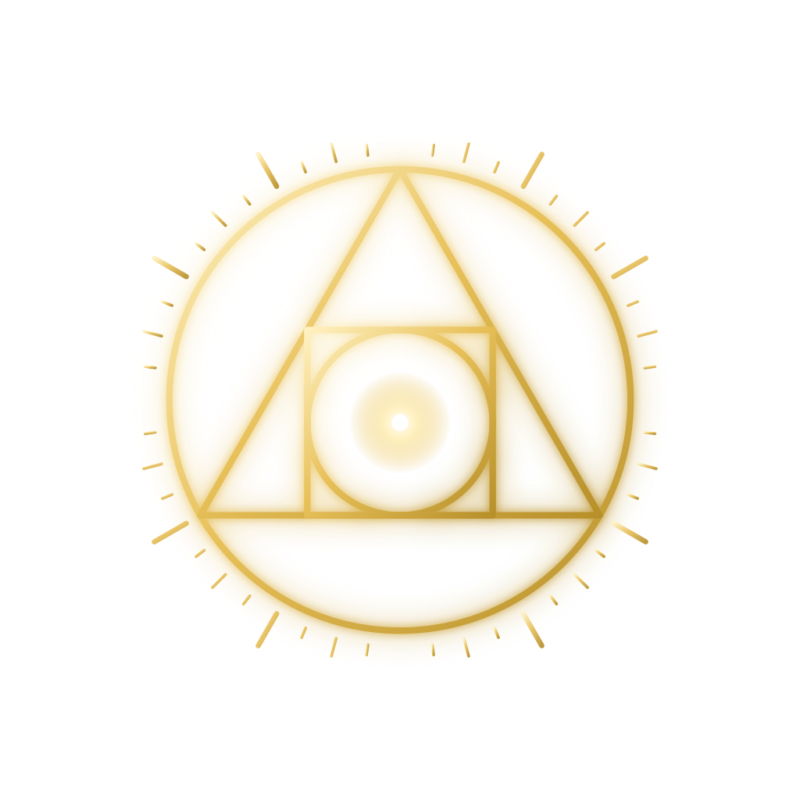

Philosopher's Stone
Truth Seeker Academy
An exclusive community for people who question the official story. Hidden history, declassified files and the research behind them, studied together.
What you get
- The classroomStructured lessons on hidden history and declassified records.
- The communityA private space to share research, ask questions and dig deeper with other members.
- Direct from StoneNew material and discussions from Philosopher's Stone, posted inside the Academy.
$20 / month
Exclusive membership from day one. Cancel anytime in Skool.
Join the Academy Back to all links